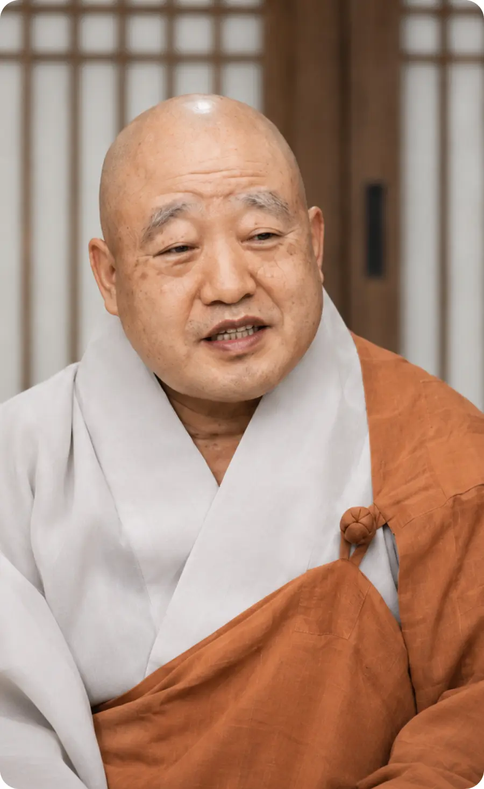
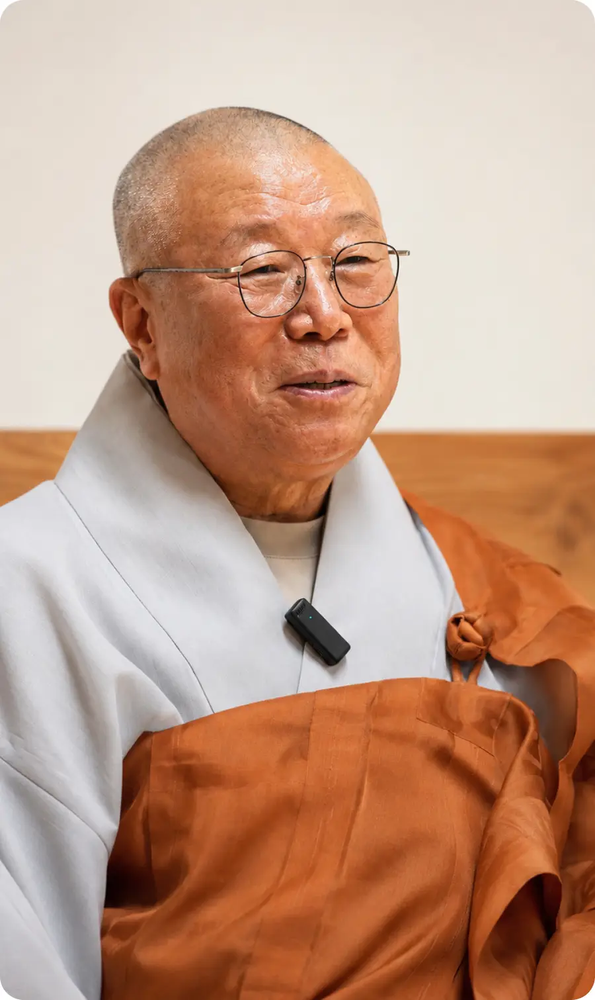
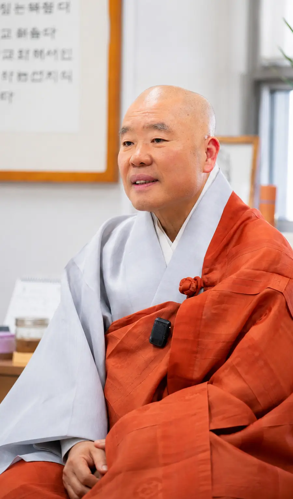
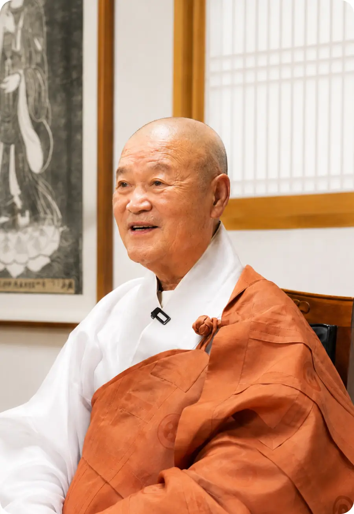

VOICES
네 갈래 이야기
영상은 누르면 그 자리에서 열립니다.
‘할 수 있다’는 믿음이 평범하고도 특별한 매일이 되다. 희망을 현실로 만들어가는 자립 장애가족들의 당찬 이야기.
PART 1 · 01
강경열, 김남영 부부
직장 자립성공사례
PART 1 · 02
조미영, 유태호
청년 자립지원사례
PART 1 · 03
문지연, 김영호, 장재웅
성북장애인복지관 배드민턴 선수단
장애가족을 향한 마음이 모여 특별한 변화를 만들어가다. 더 나은 내일을 함께 만들어가는 승가원 근무가족들의 이야기.
PART 2 · 01
김진봉 물리치료사
이천시장애인종합복지관 수중재활치료사
PART 2 · 02
박치환 대리
Happy햇비장애인보호작업장 작업 지원
PART 2 · 03
김찬중 생활재활복지사
코로나19 동반 코호트 격리 생활재활복지사
PART 2 · 04
KEEP GOING 42
2026 장애인의 날 기념 승가원 기부런
나눔과 희망이 모여 누군가의 삶에 든든한 힘이 되다. 장애가족의 행복을 응원하며 승가원과 함께 걸어온 후원가족들의 이야기.
PART 3 · 01
정희정, 구현진
종교의 벽을 넘은 후원
PART 3 · 02
유기석, 유채아
3대에 걸친 세대연계후원
PART 3 · 03
박현주
행복나눔가게 MAKE ME HAPPY
역대 이사장스님 인터뷰 역대 승가원 이사장스님께서 들려주시는 승가원 30년 역사의 속깊은 이야기.

제6대 이사장 태원큰스님
서른 살 청년이 된 승가원, 후대에 어떤 사회복지 자손을 남길지 고민해야
중앙승가대학교가 소쩍새마을을 처음 인수했을 때로 돌아가 보면 여러모로 열악한 상황이었지만 금세 운영 정상화를 실현하며 건실한 사회복지법인으로 대외에 알려질 수 있었습니다. 큰스님께서 이사 소임을 수행하시던 시절이기도 한데 법인의 성장 모습을 보시며 어떤 생각을 하셨습니까?
중앙승가대학교가 소쩍새마을을 인수하기 전에는 장소도 너무 협소하고, 또 개인이 운영하는 형태였기 때문에 전문성도 떨어졌어요. 그러나 승가원이 운영하고 나서는 학교 사회복지과 출신 인재들이 적극적으로 원력을 실천하고, 해가 갈수록 전문적인 운영체계를 세워 나갔죠. 이런 부분이 빠른 발전의 원동력이 되지 않았나, 생각합니다.
큰스님께서 이사장으로 재임하시던 시절, 승가원행복마을 건립사업의 기틀이 놓였다고 들었습니다.
이사장으로 취임하고 보니까 기존 시설에서 우리 장애아동들의 생활이 굉장히 불편한 상황이었습니다. 아이들에게 조금이라도 생활하기 쾌적하고 좋은 환경을 만들어 주고 싶은 마음이 컸습니다. 그래서 제가 이사장으로 있을 때 건립부지라도 좀 마련해 놓아야 하겠다고 결심하고, 부지 확보를 위한 제반작업들의 속도를 높였습니다. 돌아보면 그거 참 잘했다, 다행이다, 싶은 부분입니다.
모금사업 전담팀을 신설하고 관련된 인력 보강에도 적극적인 모습을 보이셨습니다.
‘기금이 있어야 사회복지 사업도 있는 것이다.’ 이것이 제 철학입니다. 법인 근무가족 분들께입버릇처럼 자주 얘기했죠. 불자들에 한해서만 모금운동을 해서는 안 된다. 불자가 아닌 이들이라도, 장애가족들을 도울 마음만 있다면 원력에 동참할 수 있는 환경을 갖춰야 한다. 그래서 서울역이라든가, 고속버스터미널이라든가, 거리에 나가 불특정의 사부대중을 향해 모금사업을 벌일 때 위축되지 않는 환경을 마련하기 위해 노력했던 것입니다. 1~2명이 나가서 모금을 할 때보다 3~4명이 함께 나가 모금을 진행할 때 아무래도 더 활발하게 진행될 수밖에 없지 않겠습니까? 그렇기 때문에 3~4명이 한 팀을 이뤄 거리모금캠페인을 진행할 수 있도록 조직 규모를 키웠습니다.
불자와 비불자의 경계를 초월한 후원모금사업, 이는 지금도 승가원 운영에 있어 핵심적인 방향성인 것 같습니다.
불교의 자비사상(慈悲思想)이라고 하는 것은 불자고, 불자가 아니고 간에 모든 사람에게 베풀어야 한다는 것입니다. 따라서 불교 신자와 아닌 사람, 이 나라 국적의 사람과 국외자를 떠나 지구상의 모든 사람, 나아가 모든 생명체를 도와야 하는 것입니다. 승가원 근무가족들이 그런 정신으로 사회복지사업을 전개했으면 좋겠습니다.
자비정신을 승가원 운영의 모토로 삼기 위해서 이사장 재임 시절, 특별히 추진하신 사업이 있으십니까?
지금도 그렇지만 승가원 인적 구성의 특징은 대체로 근무가족들이 젊다는 것입니다. 그래서 이 젊은 사람들이 이타사상을 가지고 일할 수 있도록 하기 위해서 수계(受戒)를 내리는 교육 프로그램을 진행했습니다. 길에서 태어나 길에서 돌아가실 때까지 타인을 위해 헌신하신 부처님의 정신을 우리 근무가족들이 배우고 실천하기를 바라는 마음에서 진행한 내부 교육 사업이었습니다.
승가원이 올해로 설립 30주년을 맞이했습니다. 끝으로 축하 메시지를 남겨주시면 감사하겠습니다.
승가원이 설립 30주년을 맞이했는데, 한 인간의 생애주기에서 30년을 산다는 것은 청년이 되어 결혼하고 자식도 낳을, 그런 나이입니다.우리 승가원의 근무가족들도 이제 성인이 된, 성숙한 기관의 일원이 되었다는 생각을 가지시고 사회복지 분야에서 후대에 어떤 결실을 남길 것인지 고민하셨으면 좋겠습니다. 그런 생각을 가지고 체계적인 비전을 갖춘 승가원이 되기를 기원하겠습니다.

제8대 이사장 원행큰스님
어언 30년 세월, 승가원 운영을 가능하게 하신 후원가족 여러분께 감사의 마음을
이사장으로 취임하시고 승가원행복마을 건립사업이 본격화되었습니다. 건립불사 성취를 위하여 후원모금사업의 중요성이 부각되던 시기인데 어떤 방향성을 가지고 사업을 전개하셨습니까?
핵심은 우리 승가원 근무가족들의 몸을 내던지는 헌신이었어요. 사무총장 스님하고 법인 근무가족들이 중심이 되어서 서울 시내 곳곳을 누비면서 밤낮으로 힘들게 화주(化主)를 했죠. 건립사업을 가능하게 한 그 큰 모금액이 다 그렇게 모인 거에요. 제가 같이 거리로 못 나가 주니까 제 입장에선 미안했죠. 그렇게 열심히 했어요. 전 근무가족이 모두 나서서 하루도 빠짐없이.
승가원행복마을을 돌아보고 깜짝 놀랐습니다. 장애인거주시설에 대한 기존의 편견들이 있으니까요. 그런데 겉으로 보이는 쾌적함을 넘어, 아이들의 정서적인 측면까지 고려한 아름답고 우아한 건물이었습니다. ‘한옥’ 컨셉으로의 건립은 어떻게 결정하시게 됐습니까?
불교 정체성에 맞으면서도 친환경적이고 아이들에게 쾌적한 환경을 제공할 수 있는 건물이었으면 좋겠다고 생각했어요. 승가원 사무총장 스님이랑 법인사무국 근무가족들하고 전국 시설들과 한옥 건축물들을 돌아보면서 공부하고 또 논의하고 했던 시간들이 있었죠. 그런 논의 과정들을 거쳐서 한옥 설계안을 우리가 먼저 만들고 이를 성공적으로 실현해 낼 수 있는 건축설계사무소를 선정했습니다.
승가원행복마을 건립 과정에서 다소 아쉬운 점도 있으셨다고 들었습니다.
딱 한 가지 밖에 없죠. 법인사무국과의 인접성이나 오래 자리 잡아 온 지역사회와의 연계성 등을 고려해서 안암동 부지로 확정 짓기는 했지만 이 부지가 서울 도심 한복판의 땅이다 보니까 워낙 비쌌어요. 원래 계획은 지금 부지 뒤쪽까지 좀 더 넓혀서 절집처럼 탁 트인 전망을 가진 한옥을 건립하는 거였는데 그런 부분에선 아쉬운 부분이 있죠. 그렇지만 서울 한가운데에서 그 정도를 해낸 것도 대단하다고 생각합니다. 승가원 근무가족 전체가 한 몸, 한 마음이 되었기에 실현할 수 있었던 원력 불사였습니다.
건립사업 진행과정에서 특별히 강조하신 부분이 있으셨습니까?
제가 이사장으로 취임하던 그 시기에 하필 우리 종단 내에서 불미스러운 부정사고들이 발생했었습니다. 제가 누누이 강조했던 건 ‘우리가 그런 전철을 밟아서는 안 된다’는 것이었습니다. 큰 규모의 자금이 투입되는 사업이다 보니 작은 부정사고라도 발생하면 건립사업 자체가 무산될 수도 있음을 강조했죠. 다행히 법인 근무가족 모두가 노심초사하며, 조심스럽게 잘 관리한 덕분에 승가원 최대 규모의 건립사업이 별 탈 없이 마무리될 수 있었습니다.
위탁 운영하는 시설들에 대해서도 특별히 관심을 가지셨다고 들었습니다.
시간 나는 대로 기관 순방을 했습니다. 우리가 위탁 운영하는 시설인 만큼 관리 감독을 소홀히 하면 불미스러운 일이 발생할 수 있어서 늘 관심을 가지고 챙겨야 한다는 생각이었습니다. 또 다수의 장애가족들을 관리하는 기관들이기 때문에 누구 하나에 대해서도 차별 없이, 잘 대해야 한다는 점을 많이 강조했습니다.
승가원이 올해로 설립 30주년을 맞이했습니다. 끝으로 축하 메시지를 남겨주시면 감사하겠습니다.
먼저 전국에 계신 승가원 후원가족 여러분께 진심으로 감사의 마음부터 전하겠습니다. 우리 승가원이 설립된 지 어언 30년 세월이 흘렀습니다. 그간 수고하고 헌신하신 여러 근무가족 여러분께도 감사드립니다. 앞으로도 대과(大過) 없이 잘 운영해 주시리라 믿고, 저도 협조할 일이 생기면 적극적으로 돕겠습니다. 모두 건강하시고 행복하십시오.

제9대 이사장 성문큰스님
감회가 남다른 승가원 설립 30주년, 헌신해 온 근무가족 여러분 모두 고생 많으셨습니다
큰스님께서는 제4대부터 제6대까지 중앙승가대학교 총동문회장을 역임하셨습니다. 이 시기 승가원과의 인연이 있으셨습니까?
원주 치악산 자락에 둥지를 틀고 있던 시절에는 소쩍새마을이란 이름으로 운영되고 있었습니다. 이 시기 우리 중앙승가대학교 학인스님들도 그곳에 자원봉사 활동을 많이 갔었기 때문에 직접적인 인연은 없었지만 간접적인 관련은 있었습니다. 이후 소쩍새마을 운영에 문제가 생겨 우리 학교가 이어받게 되면서 과거보다 더욱 잘 운영될 수 있을 거라 생각하고 마음 속으로 응원했습니다.
승가원은 지난 30년간 ‘자비복지’의 정체성을 지키며 성장해 왔습니다. 중앙승가대학교 1기 졸업생이자 이사장을 역임하신 입장에서, 승가원이 우리 불교계와 사회에서 갖는 상징적 의미는 무엇이라고 보십니까?
승가원은 단순히 하나의 사회복지법인이 아닙니다. 중앙승가대학교의 운영 방향과 궤를 같이하며, 수행자들이 배운 자비 사상을 사회에서 어떻게 실천할 것인가를 고민해 온 ‘결실’ 그 자체입니다. 30년 전, 우리 학인스님들이 십시일반 정성을 모아 장애아동들을 보듬기 시작했던 그 초심은 지금도 승가원의 가장 큰 자산입니다. 수행의 완성은 중생 구제에 있다는 것을 승가원이 증명해 왔으며, 이는 한국 불교 사회복지의 이정표와도 같다고 생각하고 있습니다.
이사장으로 취임하시던 시기, 승가원행복마을 건립사업이 진행 중이었습니다. 취임 초기 승가원 근무가족 분들에게 어떤 부분을 강조하셨습니까?
당시 행복마을 토목 기초공사가 막 시작되었던 것으로 기억합니다. 와서 보니까 우리 사무총장스님 중심으로 여러 분야에서 착실하게 사업을 진행하고 있었습니다. 워낙 규모도 크고 승가원 역사에서 특별히 중요한 사업이었기 때문에 이사장으로 새로 온 입장에서 열심히 준비하는 근무가족들에게 고맙고 응원하는 마음이 컸습니다. 그래서 고생하는 근무가족들을 위해 따로 선물도 준비하고 했었던 기억이 있습니다. 작고 보잘 것 없는 선물이기는 했지만 조금이라도 고마운 마음을 표현할 수 있어서 다행이었다고 생각합니다.
지난 30년간 승가원을 지탱해 온 수많은 근무가족과 봉사자, 그리고 현장에서 헌신하는 활동가들에게 전하고 싶은 격려의 말씀이 있다면 무엇입니까?
자비는 말로 하는 것이 아니라 손과 발로 하는 것입니다. 승가원의 역사는 이름 없이 정성을 보태 온 후원가족들의 공덕과, 현장에서 장애가족들과 함께 땀 흘린 활동가들의 원력으로 쓰인 역사입니다. 때로는 지치고 힘든 순간도 있었겠지만 여러분이 베푸는 선한 마음이 누군가에게는 생명줄과 같은 희망이 된다는 것을 잊지 마십시오. 승가원이라는 큰 바다에서 맺은 이 소중한 인연들이 훗날 모두의 큰 복덕으로 돌아가기를 축원합니다.
승가원이 올해로 설립 30주년을 맞이했습니다. 끝으로 축하 메시지를 남겨주시면 감사하겠습니다.
먼저 승가원이 30주년을 맞이했다고 하니 저 역시 감회가 남다릅니다. 진심으로 축하드리고 그동안 법인 운영을 위해 노력해 오신 여러 관계자분들께 고생 많으셨다는 격려의 말을 전하고 싶습니다. 또한 우리 승가원을 긴 세월 후원해 주신 후원가족 분들께도 감사의 마음을 전하겠습니다.

제11대 이사장 월우큰스님
한 사람 한 사람의 원력이 모이고, 하나로 똘똘 뭉쳐 오늘의 승가원을 이뤄냈습니다
큰스님께서는 중앙승가대학교 총무처장으로 재직하시며 승가원 감사직을 겸임하셨습니다. 당시 승가원의 첫인상은 어떠셨습니까?
소쩍새마을 운영과 관련해 사회적으로 물의가 빚어지면서 중앙승가대학교가 마을 인수와 함께 승가원 사회복지법인을 설립한 지 벌써 30년 세월이 흘렀네요. 제가 감사로 있던 시절은 승가원이 막 도약을 시작하던 시기였습니다. 당시 ‘태호’라는 아이를 통해 승가원이 대중들에게 널리 알려지기 시작했고, 이를 계기로 후원가족들이 점차 늘어나던 때였어요. 기억에 남는 건 우리 법인이 비로소 ‘체계화의 길’에 들어섰구나, 생각했던 순간이에요. 근무가족들 사이 활발한 논의가 이뤄지면서 업무의 기틀이 세워졌고, 또 산하기관들을 잇달아 위탁 운영하게 되면서 몸집도 과거에 비해 눈에 띄게 커지고 있었어요.
감사 소임을 맡으셨던 시절 승가원자비복지타운 건립사업이 진행됐는데 사업 진행과정에서 기억에 남는 에피소드가 있으십니까?
우여곡절이 정말 많았죠. 이천에 부지를 확보하고 시의 예산도 받아 건설사업을 시작하려 하는데 주민 분들의 반대가 심했어요. 장애인거주시설이 들어온다고 하니 피켓 들고 시위하면서 반대하는 사람들이 많았어요. 다행히 그 시기 이사장을 역임하신 종범큰스님께서 지혜롭게 대처하셔서 합의를 이끌어 내셨고 그 결과 지금은 이천시 지역사회에서도 자랑스러워하는 명물이 될 수 있었습니다.
이사장으로 취임하시고 언론매체와의 인터뷰에서 “부처님의 자비심을 삶 속에서 구현하는 실천불교의 현장이 바로 승가원이다.” 라는 말씀을 하셨는데 이 말씀의 의미를 풀어 얘기해 주시면 감사하겠습니다.
중앙승가대학교가 1979년 개교했을 당시 우리 학교는 불교학과와 사회복지학과, 두 학과를 축으로 출발했습니다. 중앙승가대학교가 설립 당시부터 ‘불교’와 ‘사회복지’의 균형과 화합을 목표로 하여 설립된 학교라는 점, 그리고 이처럼 창조적인 학교 설립이념이 그대로 승가원 운영의 정신적 뿌리가 되었다는 점을 강조한 얘기였습니다.
승가원이 앞으로 어떤 방향으로 성장해 나가고, 또 어떤 역할을 해야 한다고 생각하십니까?
저는 장애와 비장애의 경계를 넘을 수 있는 잠재력이 승가원에 있다고 생각합니다. 우선 우리 장애가족들을 ‘장애’의 틀 속에 가두지 말고 비장애인들과 함께 어울리고 더불어 살아가게 할 수 있는 활동들을 많이 마련하고 활발하게 진행해야 합니다. 또 비장애인들과 후원가족들이 봉사를 통해 사회에 기여할 수 있는 장을 많이 마련하고 장애가족과 비장애인, 근무가족 및 관계자와 후원가족이 형성하는 네트워크를 지속적으로 넓혀 나간다면 승가원 앞에 또 한 번의 도약 기회가 열릴 것이라고 생각합니다.
승가원이 올해로 설립 30주년을 맞이했습니다. 끝으로 축하 메시지를 남겨주시면 감사하겠습니다.
오래전 설레는 마음으로 문을 열었던 승가원이 올해로 벌써 설립 30주년을 맞이했습니다. 한 사람 한 사람의 원력이 모이고, 사무총장 스님을 비롯하여 근무가족 모두가 하나로 뭉쳐서 운영해 왔기 때문에 오늘까지 올 수 있었다고 생각합니다. 앞으로도 더욱 분발하셔서 더 좋은 복지를 꽃피우시기를 기원하겠습니다.

제12대 이사장 현각큰스님
나와 남을 이롭게 하는 길, 승가원은 앞으로도 그 자비로운 길을 열어 가겠습니다
이사장스님께서는 어떤 계기로 사회복지 분야와 깊은 연(緣)을 맺게 되셨나요?
제가 출가한 지 60년이 다 되어 갑니다. 그중에 낙산사 주지를 하셨던 진천스님이라는 분을 만났어요. 오대산 월정사에서 그분과 한철을 보내면서 어떻게 살아가야 할지, 불교가 어떤 이상을 지향해야 할지 많은 대화를 나눴는데, 그분이 특히 사회복지를 강조하셨습니다. “부처님은 곁에 어려운 이를 외면해서는 안 된다고 하셨습니다. 우리가 불교라는 이름의 테두리 안에만 머물러서는 안 됩니다. 그 이름을 쓰지 않는 곳으로도 외연을 넓혀야 합니다.” 이런 말씀이었죠. 그 이후로 기회가 되면 ‘사회복지’라는 우물에 직접 뛰어들어야 하겠다는 생각을 하고 있다가 1990년대 초부터 이 분야로 들어서게 된 것입니다.
큰스님께서는 소쩍새마을 2대 원장으로 재임하셨습니다. 생활환경이나 운영 여건이 아주 열악하던 시절인데, 여러 면에서 어려움이 많으셨을 것 같습니다.
1990년대 중반에 기존 소쩍새마을 운영자들이 직접 운영이 어렵게 됐다고 판단하면서 사회복지학과를 가지고 있는 중앙승가대학교에 인수를 타진해 왔고, 그렇게 해서 그쪽과 협약을 맺게 됐어요. 그런데 학교 쪽도 충분한 준비기간을 가지고 시설을 인수 받은 건 아니니까 참 어려움이 많았죠. 그러다 제가 원주 지역에 오래 살았고 활동 근거지가 그쪽이다 보니까 원장 제안을 받았던 거죠. 가장 어려웠던 문제는 지역주민들과의 갈등이었어요. 소쩍새마을의 많은 인원들이 치악산 자락에서 생활하다 보니 수질 문제를 주민들이 제기했던 게 기억에 남아요. 결국 원주시와 협의를 해서 제대로 된 정화시설을 빠른 시일 내에 갖췄죠. 또 당시만 해도 그 정도의 대규모 장애인거주시설이 많지 않다 보니 소쩍새마을 소문을 듣고 새벽에 몰래 아이를 마을 입구에 놓고 가는 일이 빈번했어요. 그럼 우리가 임시로 교실을 가벽으로 막아 방을 마련하고 아이들을 받아야 했어요. 그런 시대를 겪어낸 끝에 오늘의 승가원이 존재할 수 있었음을, 지금의 승가원 근무가족들이 마음에 꼭 새겨줬으면 좋겠습니다.
2005년 10월, 소쩍새마을 인수 10년 만에 이천 승가원자비복지타운을 개관할 수 있었습니다. 개관 당시 감회가 정말 남다르셨을 것 같습니다.
당시 종범 이사장스님의 공이 절대적이셨죠. 당시 이사장스님과 승가원 근무가족들이 전국을 누비며 이전부지를 물색했고, 열과 성을 다해 이전사업을 준비했어요. 그 과정에서 이천 부지가 최종적으로 선정됐어요. 덕분에 서울과의 접근성도 향상됐고, 도로 개설에도 유리한 조건을 갖출 수 있었습니다. 이천시로 이전하면서 정식 인가 기준에 부합하는 건축물을 완비하고 국내에서 손꼽히는 장애인 거주시설로서의 환경을 갖출 수 있었어요. 이후 업무체계나 복지 프로그램 수준, 근무가족에 대한 처우 등에서 시스템이 잡혀 나가면서 어엿한 사회복지법인으로서 기틀을 완성해 나갈 수 있었죠.
이사장으로 취임하시고 나서 승가원 근무가족 분들에게 강조하고 계신 부분이 있습니까?
부처님은 일생을 길에서 사셨고, 길에서 사셨다는 의미는 머리로 세상을 이해하는 것이 아니라 땅에 두 발을 딛고 눈으로 직접 확인해 가며, 인생의 답을 찾아 나간다는 의미입니다. 우리 승가원 역시 그렇게 가야 합니다. 불교를 ‘불교’라고 하면 더 이상 불교가 아닐 수 있듯이 ‘사회복지’도 그럴 수 있습니다. 이름에 갇히지 말고 현장의 다양한 삶 속에 스며들어 정말 필요한 곳에 도움이 되는 길을 찾아야 합니다. ‘나와 남을 이롭게 하는 길’을 가는 것. 그걸 외면해서는 안 됩니다.
큰스님, 승가원이 서른 살 청년이 되었습니다. 승가원의 서른 번째 생일을 축하하는 말씀 한마디 부탁드립니다.
30년 전, 갓 태어난 아이 같았던 승가원이 이제는 한국 불교 사회복지의 든든한 대들보로 우뚝 선 것을 보니 참으로 대견하고 고맙습니다. 그 세월 동안 승가원이 식지 않는 온기로 장애가족들을 품어온 것은 참으로 기적 같은 일입니다. 이 모든 것은 부처님의 가피(加被)이자, 승가원을 믿어준 후원가족들 덕분입니다. 진심으로 축하드리고, 저 역시 더 나은 미래를 열기 위해 앞으로 최선을 다하겠습니다.